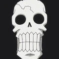

Tripulação dos Chapéus de Palha
Monkey D. Luffy

Função:
Capitão da tripulação
Informações básicas:
- Idade:17 (pré-timeskip); 19 (pós-timeskip)
- Altura: 1,72 m (pré-timeskip) ; 1,74 m (pós-timeskip)
- Fruta Akuma no Mi: Gomu Gomu no Mi
- Habilidades principais: Corpo de borracha da Gomu Gomu no Mi, que lhe confere elasticidade, resistência e imunidade à eletricidade; a força física e velocidade aprimoradas; e o uso das três formas de Haki (Observação, Armamento e Conquistador), que permitem prever ataques, fortalecer o corpo e dominar a vontade de outros. Ele também desenvolveu formas como Gear Second, Third e Fourth, além de ter despertado o poder do Gear 5, que estende as propriedades da borracha ao ambiente.
- Sonho:Ser o Rei dos piratas
Descrição:
Ele come demais e adora festas. Ele se diverte por ter essa personalidade livre, mas age com suas próprias crenças sem se vincular ao bom senso, e confia muito em seus Companheiros!
Roronoa Zoro

Função:
Imediato dos chapéus de palha.
Informações básicas:
- Idade: 19 (estreia); 21 (pós-timeskip)
- Altura: 1,78 m (estreia); 1,81 m (pós-timeskip)
- Fruta Akuma no Mi: Sem fruta
- Habilidades principais: Os poderes de Zoro são centrados na sua incrível habilidade como espadachim, usando o estilo de uma, duas ou três espadas para desferir ataques poderosos e com grande alcance, como o Sanjuroku Pound Ho. Ele também possui super força e resistência física, capaz de suportar danos extremos e se recuperar rapidamente, além de uma agilidade e reflexos hipersônicos. Zoro também domina a arte do Haki, aplicando-o em seus golpes para fortalecer seus ataques e se defender.
- Sonho: Ser o maior espadachim do mundo
Descrição:
O primeiro membro dos Piratas do Chapéu de Palha, um espadachim em quem Luffy tem muita confiança. Quando criança, Zoro tinha uma amiga de infância, Kuina, que treinava muito com espadas. No entanto, ele nunca conseguiu superá-la devido ao incidente que tirou a vida dela. Para cumprir a promessa que fez a ela, Zoro pretende ser o “Maior Espadachim do Mundo”. Sua crença é forte e feroz, sempre está treinando duro e gosta da adversidade quando se trata de lutar, ele busca os oponentes mais fortes mesmo que coloque sua vida em risco.
Nami

Função:
Navegadora dos chapéus de palha.
Informações básicas:
- Idade: 18 (estreia); 20 (depois do timeskip)
- Altura: 1,69 m (estreia); 1,70 m (depois do timeskip)
- Fruta Akuma no Mi: Sem Fruta
- Habilidades principais: As habilidades de Nami incluem ser uma navegadora e cartógrafa excepcional, capaz de prever o clima e navegar por qualquer condição. Ela também é uma ladra e batedora de carteiras habilidosa, com grande destreza em furtividade. Além disso, ela utiliza o Clima-Tact para manipular o clima, criando efeitos como nuvens de raios, chuva e bolhas de calor para atacar e se defender.
- Sonho: Fazer um mapa do mundo todo ou seja cartografar o mundo inteiro
Descrição:
A Navegadora do bando guia o navio com riqueza de conhecimentos sobre viagens e talento natural para prever o clima. Sem ela, a jornada não seria completa. Ela era ótima em fazer cartas náuticas desde criança, e seu sonho é fazer um mapa-múndi. Ela odiava piratas porque sua cidade natal era dominada por eles, mas foi salva por Luffy e se tornou sua Companheira. Ela é muito séria com dinheiro e frequentemente repreende os Companheiros que gastam demais.
Usopp

Função:
Atirador dos chapéus de palha.
Informações básicas:
- Idade: 17 (estreia); 19 (pós-timeskip)
- Altura: 1,74 m (estreia); 1,76 m (pós-timeskip)
- Fruta Akuma no Mi: Sem Fruta
- Habilidades principais: As habilidades de Usoop incluem precisão de atirador, criação de armas e gadgets engenhosos como o Clima-Tact, a criação de Pop Greens (estrelas vegetais), e o uso do Haki da Observação para visão aprimorada e detecção de inimigos. Ele é um dos atiradores mais notáveis da série, com uma pontaria excepcional e uma grande capacidade de planejamento estratégico e resolução de problemas.
- Sonho: Tornar-se um "bravo guerreiro do mar"
Descrição:
Filho do atirador Yasopp, Usopp sonha em se tornar um bravo guerreiro do mar. Ele é ótimo em inventar ferramentas e armas, e também ajudava nos reparos do navio. Apesar de ser tímido e medroso, demonstra grande coragem quando necessário.
Sanji

Função:
Cozinheiro da tripulação.
Informações básicas:
- Idade: 19 (estreia); 21 (depois do timeskip)
- Altura: 1,77 m(estreia); 1,80 m(depois do timeskip)
- Fruta Akuma no Mi: Sem fruta
- Habilidades principais: As habilidades de Sanji incluem o estilo Perna Negra, que utiliza chutes poderosos e versáteis, e o Diable Jambe, que gera chamas nas pernas para dano extra. Ele também domina o Sky Walk e o Blue Walk, permitindo-lhe saltar no ar e correr sobre ou sob a água. Adicionalmente, Sanji possui os três tipos de Haki (Armamento e Observação), o uso do traje Stealth Black para invisibilidade e aprimoramento, e uma destreza culinária excepcional
- Sonho: Encontrar o All Blue, um mar lendário onde todos os peixes e criaturas dos quatro mares (East Blue, West Blue, North Blue e South Blue) se reúnem
Descrição:
Sanji é responsável pela comida da tripulação e é um lutador habilidoso usando apenas as pernas. Tem um grande respeito pelas mulheres e sonha em encontrar o All Blue, o mar lendário que reúne todos os peixes do mundo.
Tony Tony Chopper

Função:
Médico da tripulação.
Informações básicas:
- Idade: 15 (Estréia); 17 (Depois do timeskip)
- Altura: 90 cm
- Fruta Akuma no Mi: Hito Hito no Mi
- Habilidades principais:
- Sonho: Curar todas as doenças do mundo e se tornar um médico reconhecido
Descrição:
Chopper é uma rena que comeu a Fruta Hito Hito no Mi, podendo se transformar em humano. É responsável pela saúde de todos a bordo e possui grande conhecimento em medicina e remédios. É fofo, mas valente quando necessário.
Nico Robin

Função:
Arqueóloga da tripulação.
Informações básicas:
- Idade: 28 (estreia); 30 (depois do timeskip)
- Altura: 1,88 m
- Fruta Akuma no Mi:Hana Hana no Mi
- Habilidades principais:Os poderes de Nico Robin vêm da Akuma no Mi Hana Hana no Mi (Fruta Flor-Flor), que a permite replicar e fazer brotar partes do seu corpo em qualquer superfície, inclusive em outras pessoas, mantendo o controle sobre elas. Ela pode criar cópias de seus braços, orelhas, olhos e até clones inteiros para combate, espionagem e suporte. Além disso, ela é uma arqueóloga habilidosa e a única pessoa viva capaz de ler os Poneglyphs.
- Sonho:Desvendar a verdadeira história do mundo, especificamente o que ocorreu durante o Século Perdido, um período que o Governo Mundial tentou apagar dos registros
Descrição:
Robin tem grande conhecimento histórico e pode ler Poneglyphs. Ela comeu a Fruta Hana Hana no Mi, permitindo que crie membros extras do corpo em qualquer superfície. Inicialmente misteriosa, torna-se uma importante aliada da tripulação.
Franky

Função:
Carpinteiro e engenheiro do navio.
Informações básicas:
- Idade:
- Altura: 2,25 m (Antes) 2,40 m (Depois do Timesekip)
- Fruta Akuma no Mi:Sem fruta
- Habilidades principais: As habilidades de Franky são baseadas em seu corpo ciborgue e genialidade como engenheiro, permitindo-lhe construir e modificar seu próprio corpo com diversas armas e ferramentas, como mísseis, lasers e tanques embutidos. Ele também é um mestre na criação de máquinas e veículos, incluindo a construção do Thousand Sunny, e utiliza golpes de ar comprimido e grande força física em combate.
- Sonho:Criar um navio que dê a volta ao mundo
Descrição:
Franky é um ciborgue habilidoso responsável pela manutenção e melhorias do navio Thousand Sunny. Tem uma personalidade extravagante, gosta de construir e inventar máquinas incríveis.
Brook

Função:
Músico da tripulação.
Informações básicas:
- Idade: 88 (estréia); 90 (depois do timeskip)
- Altura: 2,66 m (estréia;) 2,77 m
- Fruta Akuma no Mi: Yomi Yomi no Mi
- Habilidades principais:Brook é um músico esgrimista com poderes da Yomi Yomi no Mi, que permitem que sua alma se separe do corpo esquelético, atravesse objetos e reconecte seus ossos. Após o timeskip, ele aprendeu a controlar a energia da alma para invocar o frio do submundo, criar ilusões e influenciar outras almas com sua música. Ele também possui grande destreza na esgrima, corre sobre a água e é imune a ataques baseados em água por não ter um corpo.
- Sonho: Reencontrar e se reunir com seu velho amigo Laboon
Descrição:
Brook é um esqueleto vivo que comeu a Fruta Yomi Yomi no Mi. Ele é responsável pela música e moral da tripulação. Seu charme e senso de humor animam todos, e suas habilidades de espada e agilidade são notáveis.
Jinbe

Função:
Timonel da tripulação.
Informações básicas:
- Idade: 44 (estreia); 46 (depois do timeskip)
- Altura:3,01 m
- Fruta Akuma no Mi: Sem fruta
- Habilidades principais:As habilidades de Jinbe incluem Karatê Homem-Peixe, que lhe permite manipular a água para ataques e defesa; **Haki do Armamento e **Haki da Observação, que aumentam sua força e percepção; e as **características físicas de um tritão, que lhe conferem super força e resistência, especialmente na água. Ele também é um **mestre timoneiro e pode **comunicar-se com animais marinhos.
- Sonho:O sonho dele é realizar o desejo de morte do seu antigo capitão, Fisher Tiger, de coexistência e igualdade entre humanos e homens-peixe.
Descrição:
Jinbe é um homem-peixe com grande força e experiência em navegação e combate. Ele é responsável pela direção do navio e é um aliado confiável em batalhas e estratégias.